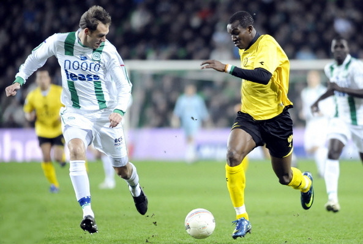

De degradatiezorgen van Roda JC worden met de dag groter.
Vrijdagavond leden de Limburgers in de Euroborg een 2-0 nederlaag bij FC
Groningen, waardoor hekkensluiter FC Volendam dit weekend in punten gelijk
kan komen met de formatie van trainer Harm van Veldhoven. Na rust tekenden
Danny Holla en Tim Matavz voor de Groningse doelpunten.
Ron Jans moest vooraf flink puzzelen om tot een fatsoenlijke opstelling te
komen. Door blessures en schorsingen was de Groningse selectie vooral in
aanvallend opzicht behoorlijk uitgedund. De pas 18-jarige Pepijn Kluin
maakte daarom zijn debuut in de basis bij de ploeg uit de Martinistad.
Het weerhield de thuisclub er niet van in de openingsfase de aanval te
zoeken. Roda JC, waar spits Sekou Cissé slechts zelden een bespeelbare bal
ontving en geen enkele ondersteuning kreeg, had veel overtredingen nodig en
Castro zorgde voor onrust door ballen die hij eenvoudig kon pakken weg te
stompen en zo de Groningse druk in stand te houden.
Wat de keeper wel goed deed, was redding brengen op een kopbal van Holla. De
middenvelder, voor het eerst opgenomen in de voorselectie van Nederland B,
kreeg de kans halverwege de eerste helft. Even daarvoor was Marcus Berg
gevaarlijk geweest met een schot dat net over ging.
Roda kreeg welgeteld één kans en dat was nog een grote ook. Cissé kreeg de
bal in het strafschopgebied met wat geluk mee, maar aaide hem vervolgens
slechts in plaats van vol uit te halen. Het gebeurde in een fase waarin het
spel van de thuisclub steeds minder werd, maar de Limburgers weigerden te
profiteren.

Dat zette zich door in de tweede helft, waardoor Roda een steeds groter
spelaandeel kreeg. Elke counter via Cissé was dreigend, ook omdat directe
bewaker Gibril Sankoh al snel een gele kaart kreeg en dus moest oppassen.
Opnieuw had Cissé de 0-1 op zijn schoen, maar hij schoof de bal net naast.
Berg deed even later aan de andere kant van dichtbij hetzelfde namens
Groningen.
De 1-0 voor Groningen was illustratief voor het duel. Holla kreeg na een
schwalbe een vrije trap mee en nam hem zelf. Roda-verdediger Marcel de Jong
bukte om Castro de kans te geven de bal te pakken, maar verraste de keeper
daarmee volledig. Vlak voor tijd zorgde invaller Matavz voor 2-0 en schoot
Goran Lovre nog op de lat.
Bron: FC Update